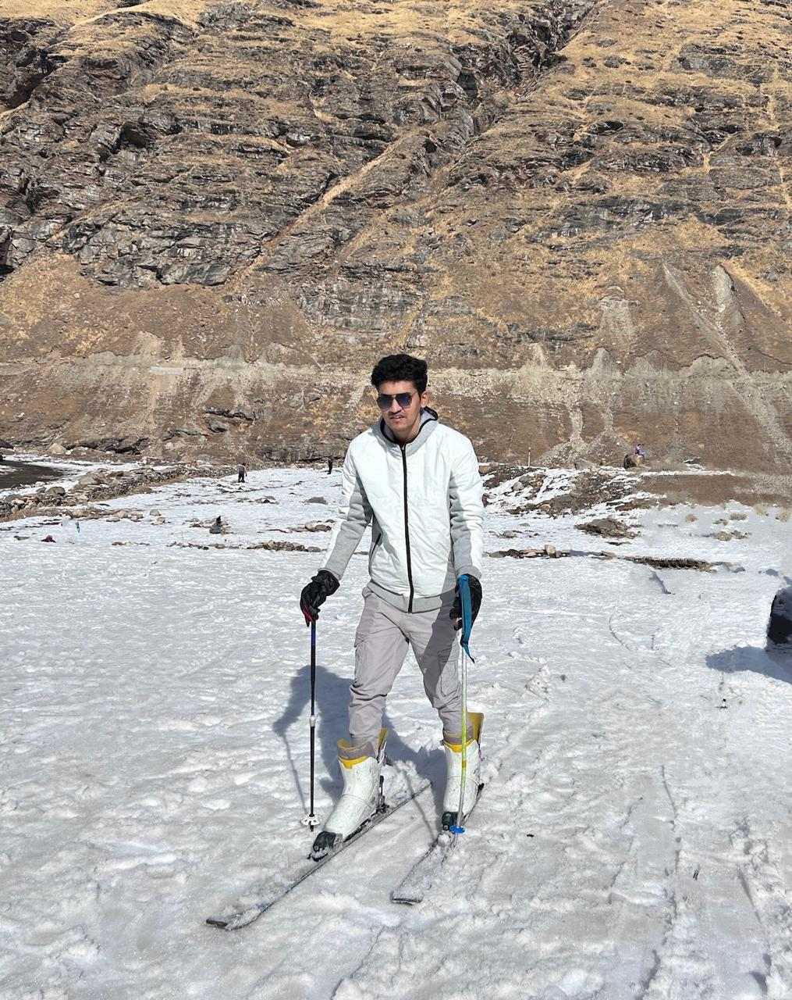

☁️ Cloud & Data Platforms
Microsoft AzureAzure Data Factory
Synapse AnalyticsAzure Databricks
Microsoft FabricOneLake
ADLS Gen2Azure SQL Database
Delta Lake
Available for senior data roles
Senior Data Engineer with 4+ years designing cloud-scale ETL/ELT and Lakehouse platforms on Azure Data Factory, Synapse, Databricks and Microsoft Fabric.

I architect and optimize cloud-scale data platforms end to end — from ingestion and transformation to governed, high-performance analytics.
Over the past 4+ years at KPMG India I've delivered a firm-wide Lakehouse and data warehousing platform serving ~20,000 users, engineered 100+ production ETL/ELT pipelines, and reduced cloud compute costs by 30% through Delta Lake performance tuning, Z-Ordering and incremental processing. I pair deep engineering with stakeholder management and technical mentoring — leading proof-of-concepts, large-scale migrations and CI/CD automation across enterprise data estates.
KPMG India
KPMG India
KPMG India
NMIMS University, Mumbai
University of Mumbai
Issued Jun 2025
Issued Jul 2023
Issued Jun 2023
Open to senior data engineering roles and interesting data platform challenges. The fastest way to reach me: